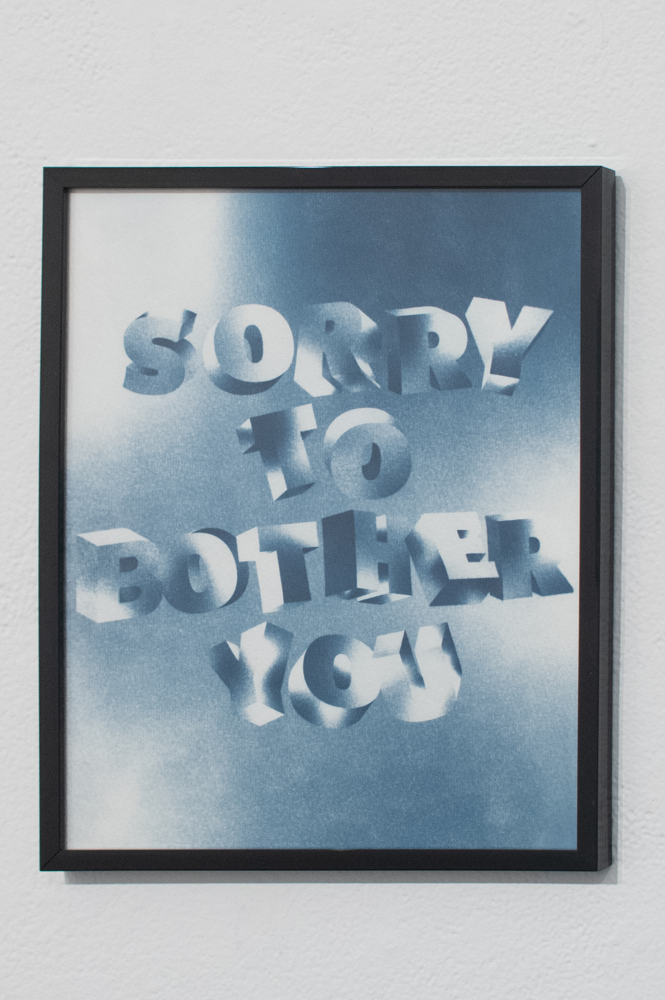
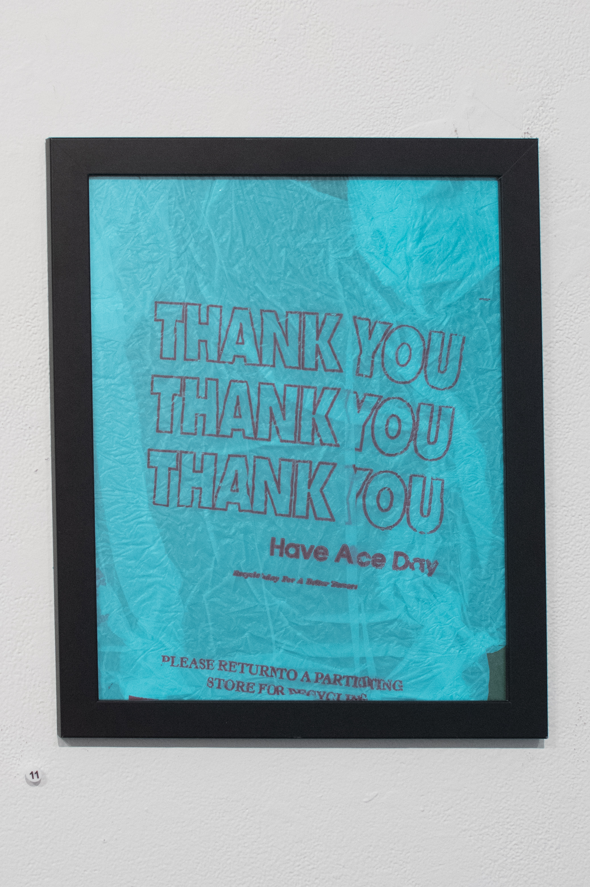
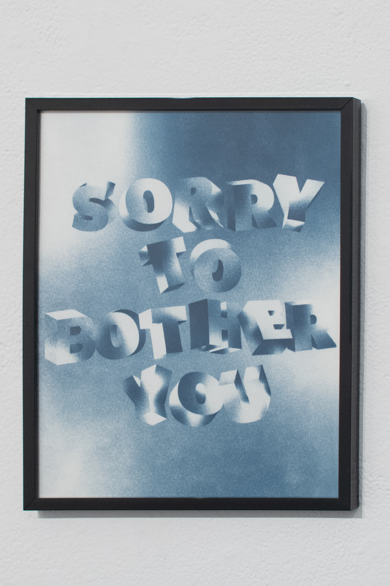
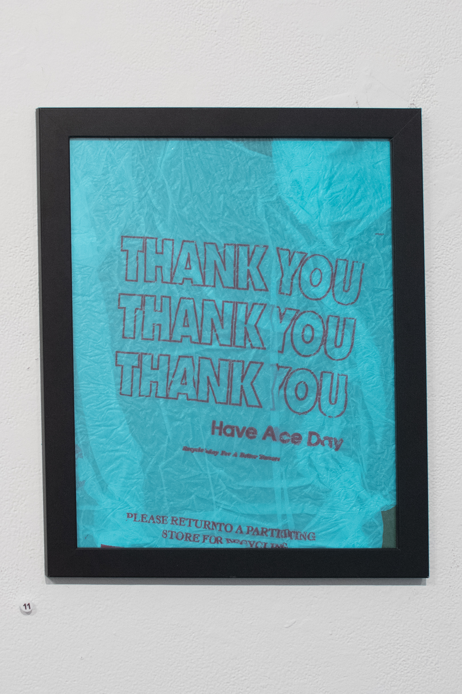
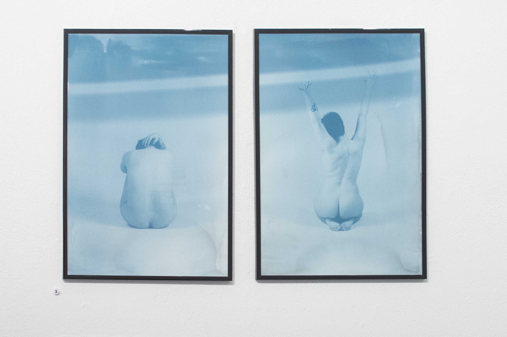
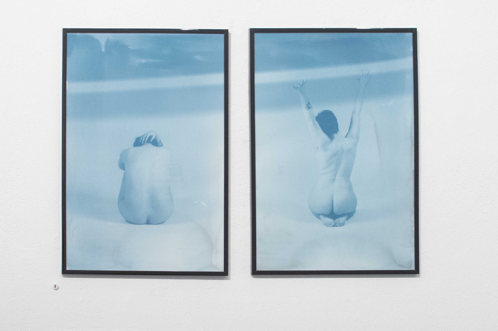

Charlie King
Symbiosis
My mental illness and I exist in symbiosis. Symbiosis is described as two species living together, whether the relationship is beneficial, causes harm, or has no effect. There are days when my depression and anxiety have no effect on my daily life, but other days are a constant struggle. Through my body of cyanotypes, I share my experiences growing up with depression and anxiety from a young age. Growing up with depression and a history of self-harm and suicidal tendencies altered the way that I experienced my childhood and adolescence as well as how I view the world. Learning how to cope with large emotions as a child and a teenager was difficult because I had no support system from adults to help me understand or cope with my large emotions. I turned to unhealthy coping systems because I thought I had no other options. My depression has evolved through the years, and I have changed with it. I have learned better coping skills, know what triggers me, learned how to take the self-care that I need, and I am medicated. Nearly one in every five people experience mental illness, but it is one topic that many people avoid. I am starting an open dialogue about depression and mental illness with my works in Symbiosis.


 





 
